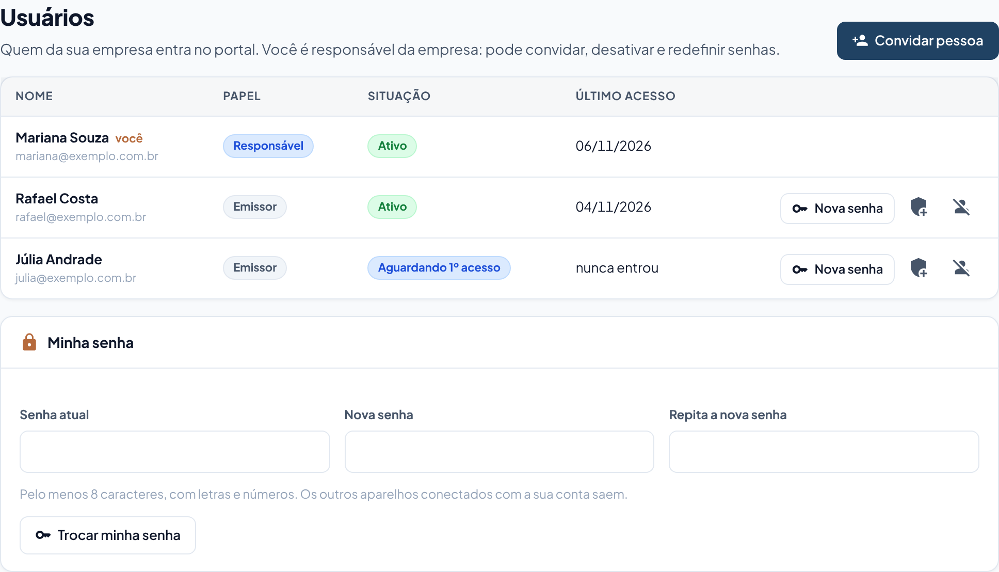
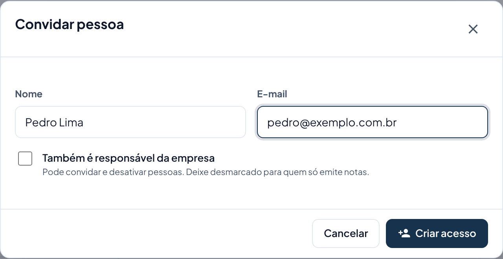
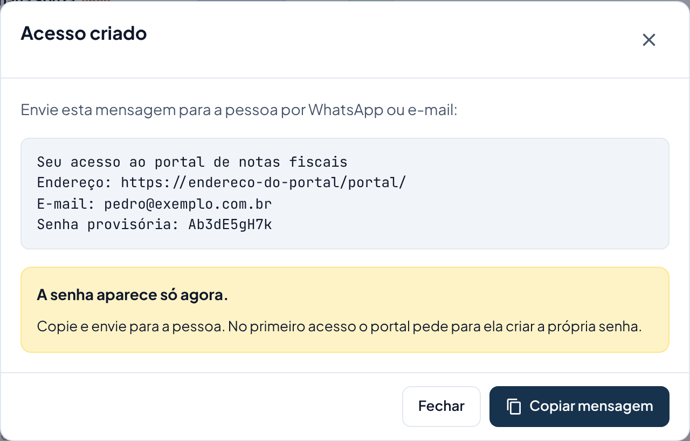

Usuários da empresa
Dar acesso ao portal para outra pessoa, gerar senha nova e tirar o acesso de quem saiu.
badge Antes de começar: os dois papéis
- Responsável emite notas e cuida das pessoas: convida, gera senha nova e desativa.
- Emissor emite e cancela notas, mas não mexe nas pessoas.
- Só um Responsável vê o botão Convidar pessoa. Se você é Emissor, peça a ele.
-
Abra "Usuários"
No menu, em Conta, clique em Usuários. A lista mostra o papel, a situação e o último acesso de cada pessoa.

-
Convide a pessoa
Clique em Convidar pessoa, preencha nome e e-mail. Marque Também é responsável da empresa só se ela for cuidar das pessoas. Clique em Criar acesso.

-
Envie a mensagem com a senha provisória
Aparece uma mensagem pronta com o endereço do portal, o e-mail e a senha provisória. Clique em Copiar mensagem e mande para a pessoa por WhatsApp ou e-mail. A senha aparece só uma vez.

No primeiro acesso, o portal pede para a pessoa criar a própria senha (veja Primeiro acesso).
Outras ações na linha da pessoa
| Botão | O que faz |
|---|---|
| Nova senha | Gera outra senha provisória. A senha antiga para de funcionar. Use quando a pessoa esqueceu e o e-mail não chega. |
| add_moderator / remove_moderator | Torna a pessoa Responsável, ou volta para Emissor. |
| person_off | Desativa: a pessoa não entra mais. Use quando alguém sai da empresa. |
| person_add_alt | Devolve o acesso de quem foi desativado. |
O que cada situação quer dizer
| Situação | O que significa |
|---|---|
| Ativo | Entra normalmente. |
| Aguardando 1º acesso | Recebeu a senha provisória e ainda não entrou. |
| Bloqueado por senha errada | Errou a senha 5 vezes. Libera sozinho em 15 minutos, ou gere uma Nova senha. |
| Desativado | Não entra mais no portal. |
← Voltar para a Central de Ajuda
Última revisão: 07/11/2026